📘 AULA 04 — COMPONENTES E SLOTS DA PLACA-MÃE
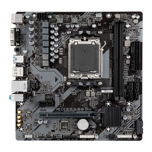
🔹 1. Introdução
A placa-mãe é o componente central de qualquer computador. É ela que interliga fisicamente e eletricamente todos os demais componentes: processador, memória, armazenamento, placa de vídeo e periféricos.
Definição: circuito impresso principal que fornece os barramentos, slots, conectores e controladores necessários para o funcionamento integrado do sistema.
Sem a placa-mãe, os componentes não se comunicam entre si — mesmo que cada um funcione individualmente.
🔹 2. Alimentação da Placa-Mãe
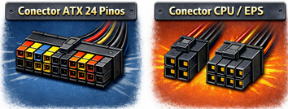
A placa-mãe recebe energia diretamente da fonte por dois conectores obrigatórios, já estudados na Aula 03:
| Conector | Pinos | Função |
|---|---|---|
| ATX 24 pinos | 24 | Distribui +12V, +5V, +3,3V e sinais de controle para toda a placa |
| CPU / EPS | 4 ou 8 | Alimenta exclusivamente o VRM que regula a tensão do processador |
⚠️ A ausência de qualquer um desses conectores impede a inicialização do sistema. O conector ATX 24 pinos é o primeiro a ser verificado em qualquer diagnóstico de bancada.
🔹 3. Socket do Processador (CPU)
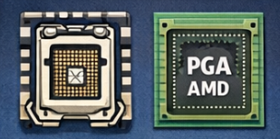
O que é
O socket é o encaixe mecânico e elétrico onde o processador é instalado. Cada geração e fabricante utiliza um socket diferente — processador e socket devem ser compatíveis.
Tipos principais
| Fabricante | Socket atual | Característica |
|---|---|---|
| Intel | LGA1700 (12ª–13ª–14ª geração) | Pinos na placa-mãe; CPU tem contatos planos |
| Intel | LGA1851 (Core Ultra 200) | Pinos na placa-mãe; nova geração |
| AMD | AM5 (Ryzen 7000+) | Pinos na CPU; placa tem contatos |
| AMD | AM4 (Ryzen 1000–5000) | Pinos na CPU; ainda amplamente usado |
Mecanismo de fixação
- LGA (Land Grid Array): pinos na placa-mãe, contatos planos na CPU. Requer cuidado extremo — pinos dobrados na placa são difíceis de reparar.
- PGA (Pin Grid Array): pinos na CPU, furos na placa. Erro de instalação dobra os pinos da CPU.
💡 O socket define quais processadores são compatíveis com a placa. Trocar de geração de CPU frequentemente exige troca de placa-mãe.
🔹 4. VRM — Voltage Regulator Module
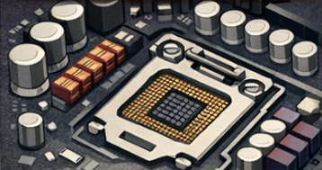
O que é
O VRM é o conjunto de componentes eletrônicos (MOSFETs, indutores e capacitores) localizado ao redor do socket que converte a tensão do conector CPU EPS (+12V) para a tensão real de operação do processador (tipicamente entre 0,8V e 1,5V).
Por que é importante
- Processadores modernos exigem tensão precisa e estável.
- Um VRM de baixa qualidade limita o desempenho e pode causar throttling (redução automática de clock para proteção térmica).
- Placas de entrada possuem VRMs simples; placas de alto desempenho possuem VRMs com mais fases para maior estabilidade.
🔹 5. Slots de Memória RAM
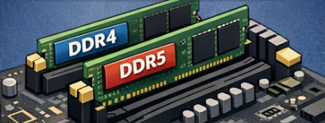
O que é
Slots onde os módulos de memória RAM são instalados. A quantidade varia conforme o padrão da placa: 2 slots (placas compactas) ou 4 slots (placas ATX padrão).
Padrões atuais
| Padrão | Velocidade base | Tensão | Compatibilidade |
|---|---|---|---|
| DDR4 | 2133–3200 MHz | 1,2V | AM4, LGA1200, LGA1700 |
| DDR5 | 4800–6400 MHz+ | 1,1V | AM5, LGA1700, LGA1851 |
⚠️ DDR4 e DDR5 são fisicamente incompatíveis — o entalhe (notch) está em posição diferente. Não é possível instalar DDR5 em placa DDR4 ou vice-versa.
Dual Channel
A maioria das placas-mãe suporta dual channel: ao instalar dois módulos nos slots corretos (geralmente A2 e B2, indicados na placa), a largura de banda da memória dobra.
💡 Instalar apenas um módulo de RAM desativa o dual channel e reduz o desempenho do sistema, especialmente em CPUs com GPU integrada.
🔹 6. Chipset
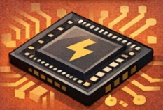
O que é
O chipset é o circuito integrado da placa-mãe responsável por gerenciar a comunicação entre o processador e os demais componentes: armazenamento, USB, PCIe adicional, áudio e rede.
Localização
Posicionado abaixo do socket, geralmente coberto por um dissipador.
Função prática
| Função | Quem controla |
|---|---|
| Comunicação CPU ↔ RAM | Direto pela CPU (IMC) |
| Comunicação CPU ↔ GPU (slot PCIe x16 primário) | Direto pela CPU |
| USB, SATA, PCIe adicional, áudio, rede | Chipset |
💡 O chipset define os recursos disponíveis na placa: quantidade de portas USB, suporte a overclocking, número de lanes PCIe adicionais. Exemplos: Intel Z790 (overclock), B760 (intermediário), H610 (básico); AMD X670 (topo), B650 (intermediário), A620 (básico).
🔹 7. Slots PCIe (Peripheral Component Interconnect Express)
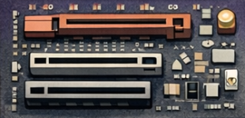
O que é
Barramento de alta velocidade utilizado para instalar placas de expansão: placa de vídeo, placa de rede, SSD M.2 em adaptador, placa de captura, entre outros.
Tamanhos físicos
| Slot | Lanes elétricas típicas | Uso principal |
|---|---|---|
| x16 | x16 ou x8 | Placa de vídeo dedicada |
| x4 | x4 | SSDs NVMe em adaptador, placas de captura |
| x1 | x1 | Placas de rede, áudio, USB adicional |
💡 Um slot x16 físico pode operar eletricamente em x8 ou x4. O tamanho do slot não garante as lanes disponíveis — consultar o manual da placa-mãe.
Gerações PCIe
| Geração | Velocidade por lane | Largura de banda x16 |
|---|---|---|
| PCIe 3.0 | ~1 GB/s | ~16 GB/s |
| PCIe 4.0 | ~2 GB/s | ~32 GB/s |
| PCIe 5.0 | ~4 GB/s | ~64 GB/s |
⚠️ PCIe é retrocompatível: uma GPU PCIe 4.0 funciona em slot PCIe 3.0, mas com largura de banda reduzida. Para SSDs NVMe de alta performance, a geração do slot impacta diretamente a velocidade.
🔹 8. Slots M.2
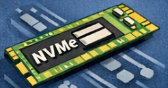
O que é
Slot compacto para SSDs de alta velocidade no padrão M.2, diretamente na placa-mãe, sem cabos.
Protocolos suportados
| Protocolo | Interface | Velocidade típica |
|---|---|---|
| SATA | SATA III | até ~550 MB/s |
| NVMe | PCIe 3.0 x4 | até ~3.500 MB/s |
| NVMe | PCIe 4.0 x4 | até ~7.000 MB/s |
| NVMe | PCIe 5.0 x4 | até ~14.000 MB/s |
⚠️ Nem todo slot M.2 suporta NVMe — alguns suportam apenas SATA. Verificar especificação no manual antes de instalar.
💡 SSDs M.2 NVMe são a opção de armazenamento principal recomendada para sistemas novos, substituindo HDDs e SSDs SATA na função de disco do sistema operacional.
🔹 9. Conectores SATA na Placa-Mãe
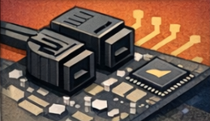
O que é
Conectores para cabos de dados SATA, que ligam a placa-mãe a HDDs, SSDs SATA e drives ópticos.
Características
- Padrão atual: SATA III (6 Gb/s)
- Quantidade típica: 4 a 6 conectores por placa
- Cada conector SATA de dados requer também um cabo de alimentação SATA da fonte (estudado na Aula 03)
💡 O conector SATA na placa-mãe transmite apenas dados. A alimentação do dispositivo vem exclusivamente da fonte, pelo cabo SATA power.
🔹 10. Conectores Internos (Headers)
O que são
Conectores de baixa tensão na placa-mãe que ligam componentes internos do gabinete e do sistema.
Principais headers
| Header | Função |
|---|---|
| Front Panel (F_PANEL) | Botão power, reset, LED de power e LED de HDD |
| USB 2.0 interno | Portas USB frontais de baixa velocidade |
| USB 3.0 interno | Portas USB frontais de alta velocidade |
| USB 3.2 Gen2 Type-C | Porta USB-C frontal |
| Fan (CPU_FAN, SYS_FAN) | Controle de velocidade dos coolers (PWM ou DC) |
| Áudio frontal (AAFP) | Conector de fone e microfone do painel frontal |
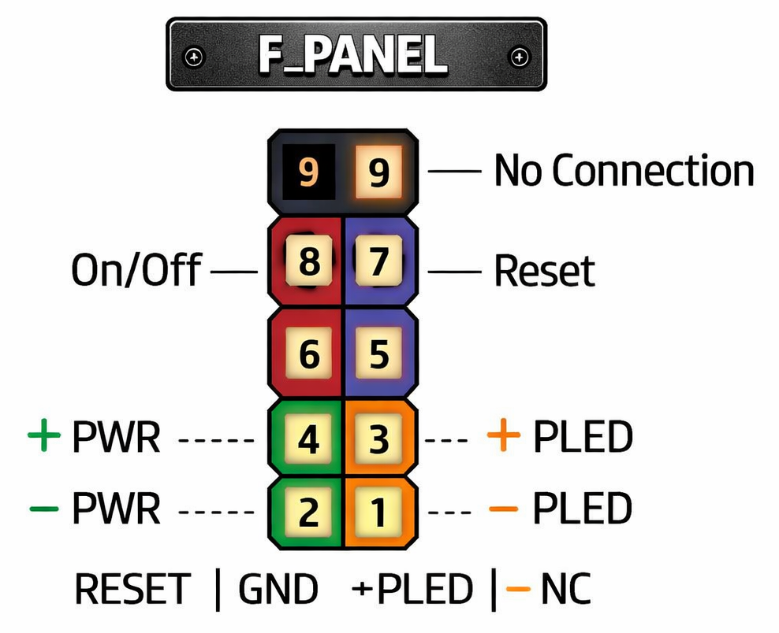
⚠️ O header Front Panel é o mais crítico na montagem: se os pinos de Power SW (botão liga) estiverem incorretos, o computador não liga mesmo com tudo funcionando. Sempre consultar o manual da placa-mãe para o mapeamento exato.
🔹 11. BIOS / UEFI
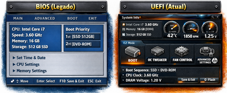
O que é
Firmware armazenado em um chip da placa-mãe responsável por inicializar o hardware antes do sistema operacional.
Funções principais
- Realiza o POST (Power-On Self Test): verifica se os componentes essenciais estão presentes e funcionando
- Configura parâmetros de hardware: clock de memória, sequência de boot, tensões
- Detecta dispositivos conectados (CPU, RAM, armazenamento)
BIOS vs UEFI
| BIOS (legado) | UEFI (atual) | |
|---|---|---|
| Interface | Texto, navegação por teclado | Gráfica, suporte a mouse |
| Suporte a disco | MBR (até 2 TB) | GPT (acima de 2 TB) |
| Boot seguro | Não | Sim (Secure Boot) |
💡 O chip de BIOS/UEFI é o primeiro componente ativo quando a fonte energiza a placa. Se ele falhar ou estiver corrompido, o sistema não realiza POST.
🔹 12. Bateria CMOS
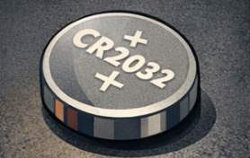
O que é
Pequena bateria (CR2032, 3V) localizada na placa-mãe que mantém as configurações de BIOS e o relógio do sistema (RTC) quando o computador está desligado e desconectado da tomada.
Sintomas de bateria fraca ou ausente
- Data e hora reiniciam para um valor padrão a cada boot
- Configurações de BIOS são perdidas
- Erros de POST relacionados a CMOS checksum
🔧 Procedimento de bancada: remover a bateria CMOS por 30 segundos com o computador desligado e desconectado é um dos métodos para resetar as configurações de BIOS (equivalente ao jumper CLR_CMOS).
🎯 Síntese da Aula
| Componente | Função principal |
|---|---|
| Conectores ATX / EPS | Entrada de energia da fonte |
| Socket CPU | Instalação e conexão do processador |
| VRM | Conversão de tensão para a CPU |
| Slots RAM | Instalação da memória (DDR4/DDR5) |
| Chipset | Gerenciamento de periféricos e barramentos |
| Slots PCIe | Expansão: GPU, redes, armazenamento |
| Slots M.2 | SSDs de alta velocidade (SATA ou NVMe) |
| Conectores SATA | Dados para HDs, SSDs e drives ópticos |
| Headers internos | Front panel, USB, fan, áudio |
| BIOS/UEFI | Inicialização e configuração do hardware |
| Bateria CMOS | Manutenção de configurações e relógio |